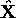

In the previous section we demonstrated how a tracked landmark can be used to obtain a position estimate given a recent observation of the landmark. Typically one might expect to detect several landmarks in a single image, and hence it is desirable to combine the individual estimates obtained from each landmark in a way that achieves a more robust position estimate. This section will explore the problem of robust position estimation from a set of estimates.
As we noted briefly in Chapter 2, Self, Smith and Cheeseman
have demonstrated the utility of the Kalman Filter in combining
position estimates [52, 53]. In that work, position estimates are
represented as Approximate Transforms (ATs) between related
coordinate frames, and described numerically by an estimated mean
, and an associated covariance matrix,  ,
,
Figure 5.5: Merged ATs. AT is the merged combination
of AT and AT .
Of the operations that are defined on ATs, the merging operation is
of principal interest to us. Merging takes two ATs and produces a
new AT whose mean, , is a weighted linear
combination of the input means, and whose covariance  expresses an improved confidence in the new estimate. The merging
operation is expressed algebraically as
expresses an improved confidence in the new estimate. The merging
operation is expressed algebraically as
where each is an approximate
transform. The operation can be depicted graphically, as shown in
Figure 5.5, wherein each vector represents a mean estimate,
with an associated covariance represented as an ellipse. The merging
operation is accomplished by first computing the Kalman
gain factor, , defined by
which is then used to compute the required merged covariance matrix
and the merged mean estimate
The effectiveness of the merging operation is dependent on two important assumptions. First, the errors in the ATs are assumed to be independent, with zero mean and expressed in the same coordinate system. Second, the error distributions of the ATs are assumed to be normal, which preserves linearity under the merging operation.